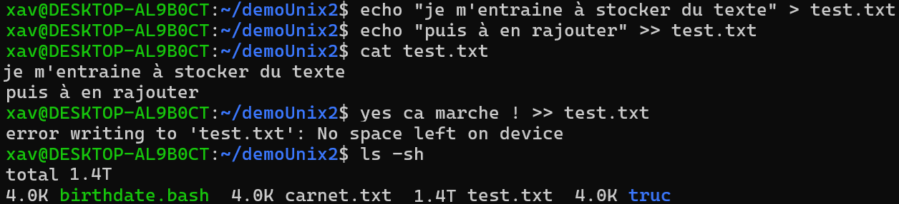

| Module | Pire erreur possible | Description | Point positif | Solution | ||||||||
|---|---|---|---|---|---|---|---|---|---|---|---|---|
| Algorithmie | Triple boucle imbriquée | Complexité catastrophique pour un problème simple | Faire une multiplication sans utiliser '*' | Utiliser '*' | ||||||||
| Java Objet | Tout mettre en static | Code illisible | Plus besoin d'instancier | Tout mettre dans un Singleton | ||||||||
| while (true) | Boucle infinie | Transforme le PC en chauffage | while (false) | |||||||||
| Init BDD et SQL | DELETE FROM users | Oublier le WHERE dans un DELETE | Nettoyage rapide de la base | Expliquer aux utilisateurs qu'ils doivent se recréer un compte | ||||||||
| UML | Diagramme avec 50 classes reliées entre elles | Un UML illisible, mais bon, on n'a jamais eu de cours sur les UML | Art abstrait | Changer de projet | ||||||||
| XML et JSON | Mélanger XML et JSON | Créer un JSON contenant des balises XML | Création d'un nouveau langage | Faire un tableau Excel | ||||||||
| Unix | rm -rf /* | |||||||||||
 |
|
Quand la commande a mis 5 minutes à s'executer je me suis douté qu'il y avais un soucis | Acheter un SSD plus rapide pour pas avoir à attendre 5 minutes avant de comprendre qu'il y a un soucis | |||||||||
| Maven | Franchement j'ai pas d'idée... si vous en avez : | |||||||||||
| Git | git push --force sur main | Sauvegarde efficace | Aucun conflit sur Git | Télétravail pour éviter les conflits avec son patron | ||||||||
| JPA avec Hibernate | Tout mettre en fetch.EAGER | Permet de charger toute la BDD en un select | Découvrerte du concept de "RAM" | Retourner sur JDBC | ||||||||
| HTML | Faire un tableau dans un tableau |
|
.+ | |||||||||
| CSS | Faire le CSS soi-même | Design retro | Demander à ChatGPT de faire le CSS | |||||||||
| JavaScript | Aucune erreur | Mais la variable est de type "🥙" | Le programme continue quand même | Dire que c'est tout à fait normal (et chercher un café) | ||||||||
| Bootstrap | C'est quoi ? | |||||||||||
L'appropriation, modification, et diffusion de ce tableau est autorisée sans restriction à condition d’en assumer la responsabilité si Jordan demande qui en est l’auteur.